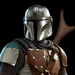

The Mandalorian
Powerful Mandalorian bounty hunter who relies on critical hits to overwhelm his enemies
Powerful Mandalorian bounty hunter who relies on critical hits to overwhelm his enemies
Deal Physical damage to target enemy and gain Critical Chance Up for 2 turns. On a critical hit, grant another random Bounty Hunter ally Critical Chance Up for 2 turns who does not already have it.
Deal Physical damage to target enemy and call another target Bounty Hunter ally to assist. Then the Mandalorian and the assisting ally gain Critical Damage Up for 2 turns.
All Scoundrel allies have +20 Speed, +35% Tenacity, and +30% Critical Chance. When the Mandalorian is in the Leader slot, and not the Ally slot, the following Contract is active:
Contract: While buffed, score critical hits against enemies 20 times. (Only Bounty Hunter abilities can contribute to this Contract)
Reward: For the rest of the battle, all Bounty Hunter allies have their Payouts activated and gain the following: while a Bounty Hunter ally is attacking, they have +20% Offense and Health Steal for each buffed ally.
Each time the Mandalorian scores a critical hit, he gains 30% Turn Meter and other Bounty Hunter allies gain half that amount. At the start of encounter, the Mandalorian has Bounty Hunter's Resolve until he is defeated.
Whenever the Mandalorian receives a Reward from a Contract, he also gains the following Payout. (Contracts are granted by certain Bounty Hunter Leader Abilities.)
Payout :Grant the Mandalorian +50% Critical Damage and the Special ability Disintegrate until end of battle.
Disintegrate : While the Mandalorian has Critical Chance Up or Critical Damage Up, this ability instantly defeats target enemy, which can't be evaded. Enemies defeated by this ability can't be revived.
Each time the Mandalorian scores a critical hit while buffed, reduce the cooldown of this ability by 1 (Cooldown: 8).